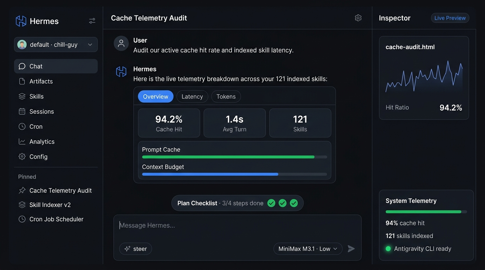

Updated to the **Void Carbon** ultra-dark palette. Try clicking the **Gateway Switcher** (`Laptop Hermes ▾`), the **Worktree Switcher** (`wt/feat-webui-v2 ▾`), the **Plugins** sidebar hub, or pressing **`Ctrl+B`** to collapse the sidebar completely.
Plugins Hub
Manage plugins on the active gateway (Laptop Hermes). Click toggles to test live state.
hermes-artifacts
Live editable docs, sheets, slides, boards, dashboards (`ha_guide` → `ha_publish`).
whiteboard
Spatial canvas & flowcharts synced with Hermes sessions.
memory-wiki
Structured memory browser & cross-linked notes pane.
hermes-security
Diff review, threat modeling, and finding verification skills.
hermes-memory-ui
Visual memory inspector and budget monitor.
claude-code-theme
Optional external theme override (off while Void Carbon is active).
Git Worktrees & GitHub Workflow
Each worktree isolates branch state, diffs, PR checks, and Hermes chat sessions so parallel tasks never collide.
wt/feat-webui-v2 PR #48
wt/fix-cache-meta 3 mod
main clean
Skills Index (121 Active · 0 Errors)
interactive-options auto_load
Always-on flush tabbed ::preview widget & clarify playbook.
antigravity-cli shared
Headless JSON bridge to agy (Gemini 4 / Claude 5.5) & MCPs.
tool-sweep shared
Single-process fan-out & contact-sheet vision audits.
Nano Banana Visual Concepts
New v2 Void Carbon render alongside v1 concepts for comparison.

